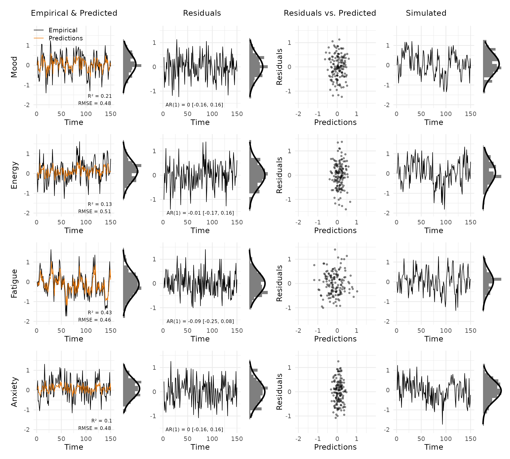
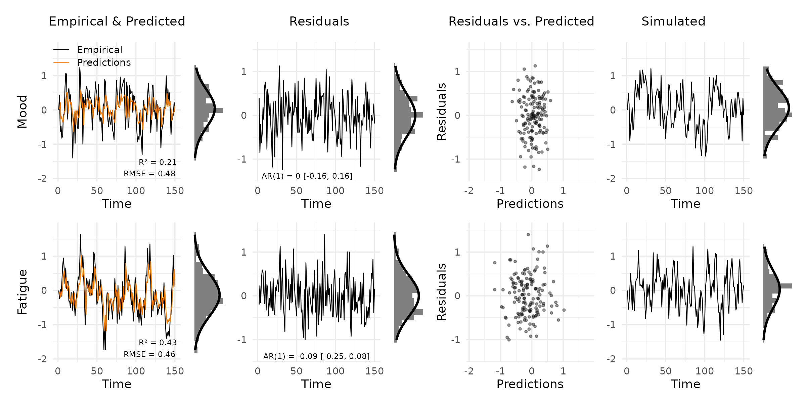
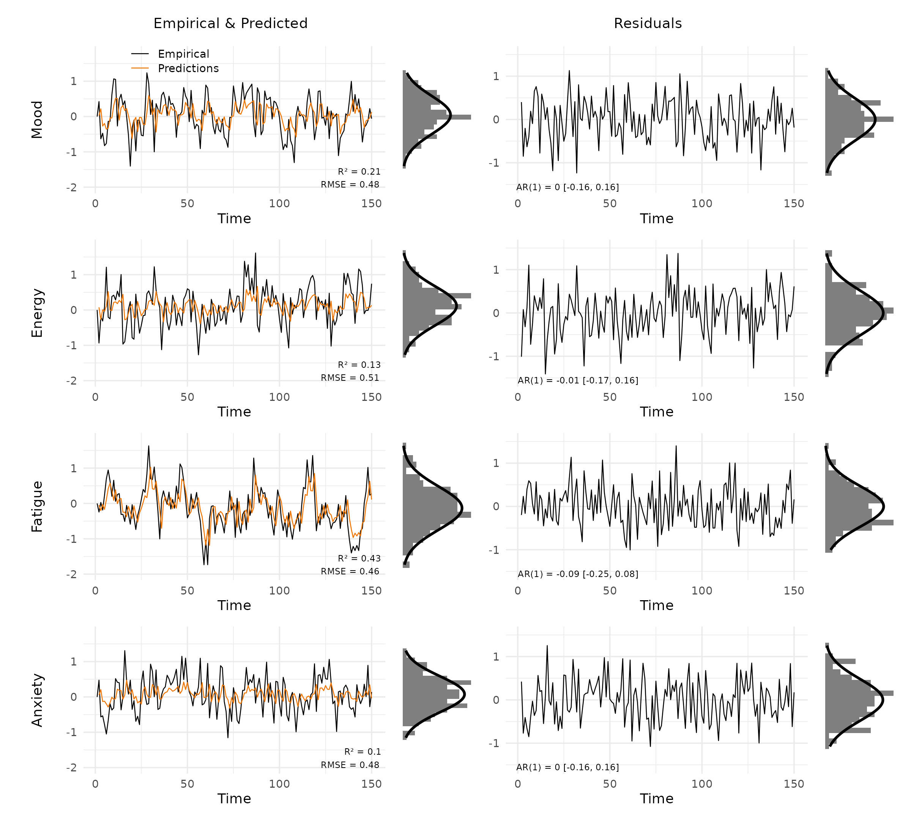
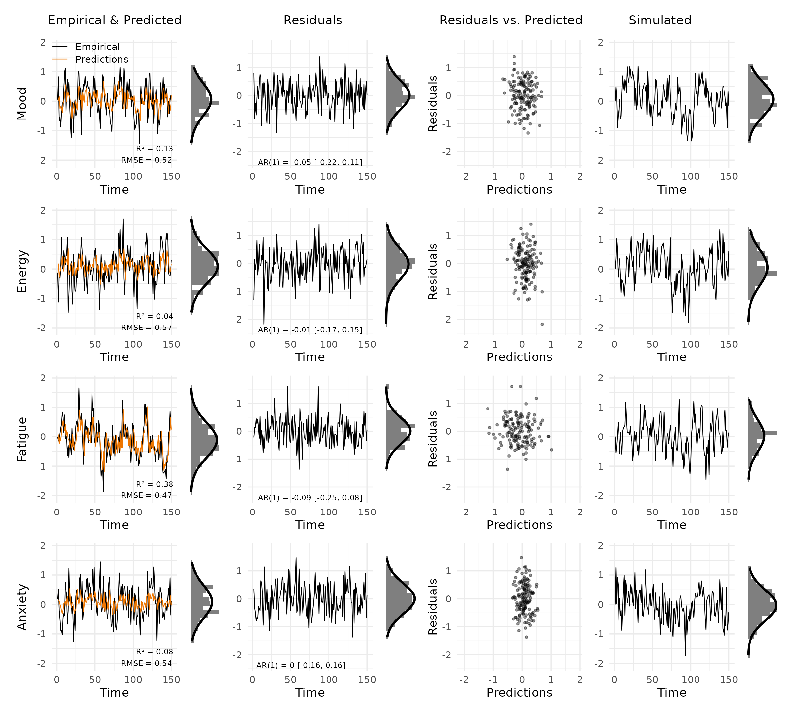
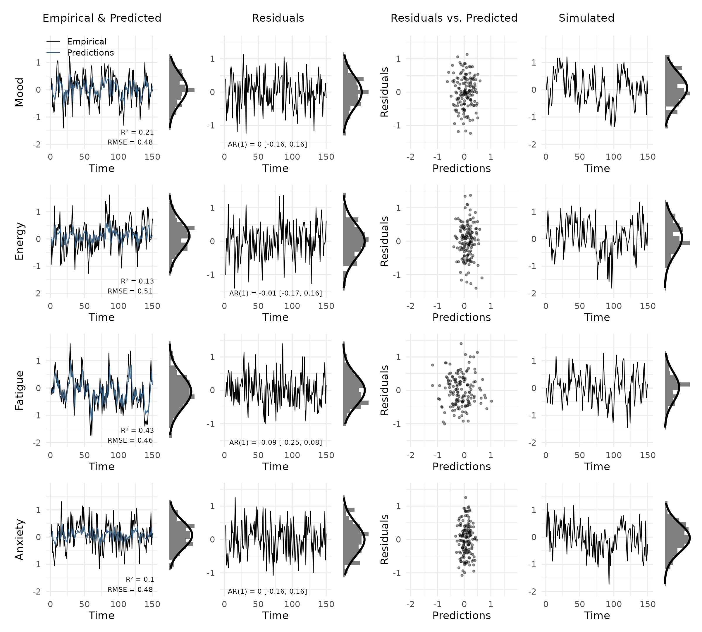
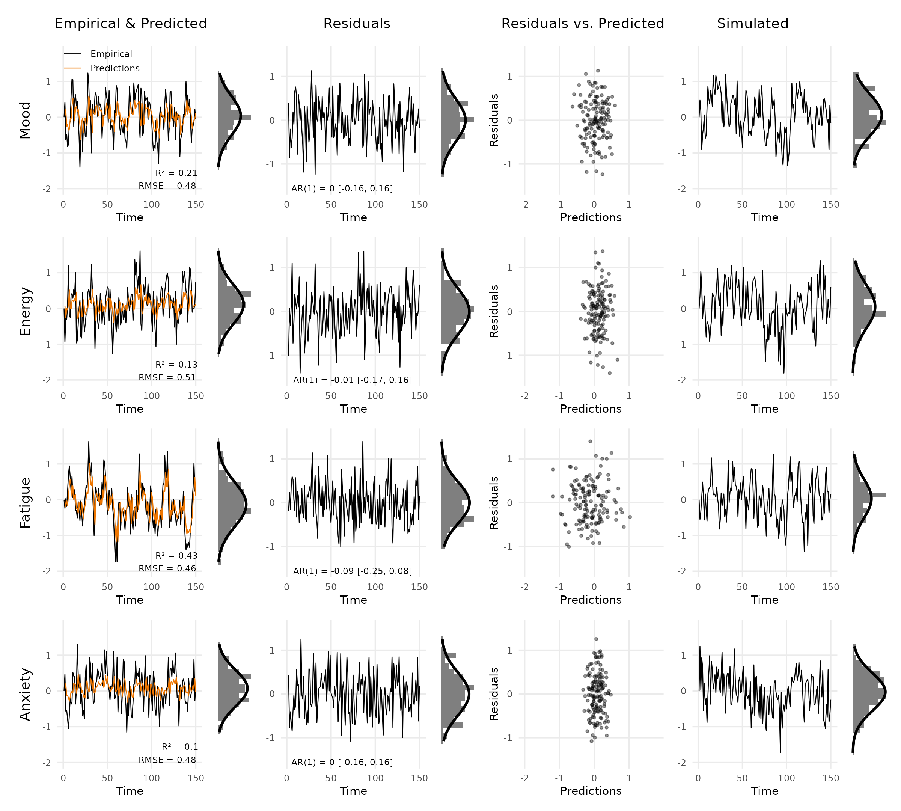
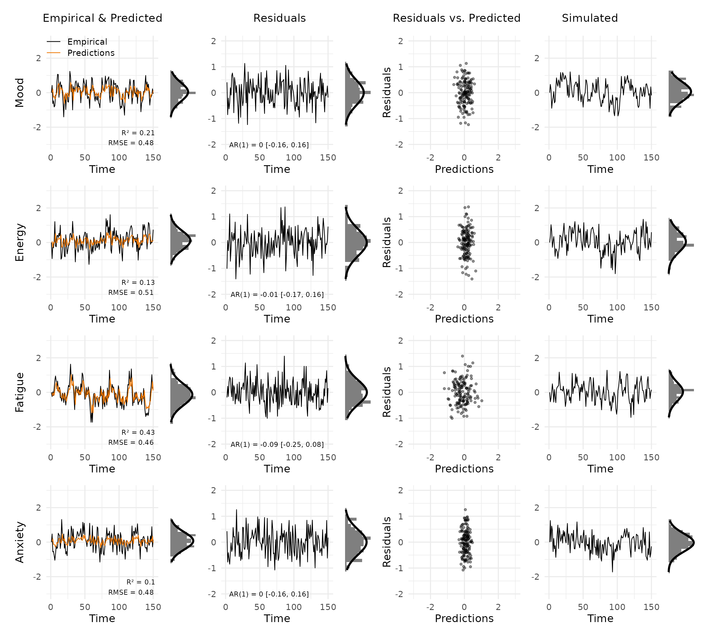

VARcheck visualises the fit of vector autoregressive (VAR) models through a multi-panel diagnostic grid. The package does not fit models. Instead, it takes the outputs of your existing workflow and turns them into a structured plot.
Creating a var_data object
new_var_data() takes three required inputs (empirical
data, model predictions, and residuals), each as a T × p
numeric matrix (time points × variables). Simulated data for posterior
predictive checks is optional but enables the rightmost column of the
diagnostic grid.
The example below simulates a simple two-variable VAR(1) process directly, without any modelling package.
# Simulate a VAR(1) process
T <- 150
p <- 4
phi <- matrix(c(0.5, 0.1, 0.0, 0.0,
0.2, 0.4, 0.0, 0.1,
0.0, 0.0, 0.6, 0.0,
0.1, 0.0, 0.2, 0.3), nrow = p, byrow = TRUE)
emp <- matrix(0, T, p)
for (t in 2:T) {
emp[t, ] <- phi %*% emp[t - 1, ] + rnorm(p, sd = 0.5)
}
# Fit a simple lag-1 linear model per variable (stand-in for a real VAR fit)
pred <- matrix(NA, T, p)
res <- matrix(NA, T, p)
for (j in seq_len(p)) {
fit <- lm(emp[-1, j] ~ emp[-T, j])
pred[-1, j] <- predict(fit)
res[-1, j] <- residuals(fit)
}
# Simulate from the fitted model for the posterior predictive check
sim <- matrix(0, T, p)
for (t in 2:T) {
sim[t, ] <- phi %*% sim[t - 1, ] + rnorm(p, sd = 0.5)
}
vd <- new_var_data(
empirical = emp,
predicted = pred,
residuals = res,
simulated = sim,
var_names = c("Mood", "Energy", "Fatigue", "Anxiety")
)
vd
#> <var_data>
#> Subjects : 1
#> Variables : 4 ( Mood, Energy, Fatigue, Anxiety )
#> Timepoints : 150
#> Components: empirical, predicted, residuals, simulatedThe diagnostic grid
plot_var_check() returns a patchwork object, so it
can be printed, saved with ggplot2::ggsave(), or combined
with other plots.
plot_var_check(vd)
Each row shows one variable. The columns are:
- Empirical & Predicted: observed values (black) against predictions (orange), with R² and RMSE in the bottom right. The small panel to the right is a marginal histogram with a Gaussian overlay.
- Residuals: residuals over time, annotated with the AR(1) coefficient and 95% CI to flag autocorrelation.
- Residuals vs. Predicted: scatter of residuals against predictions. A clear pattern here signals model misspecification.
- Simulated: data simulated from the fitted model, for visual comparison with the empirical series.
Selecting variables and panels
Show only a subset of variables by name or index:
plot_var_check(vd, vars = c("Mood", "Fatigue"))
Drop columns you do not need. The layout adjusts automatically:
plot_var_check(vd, panels = c("data", "residuals"))
Multiple subjects
When data comes from multiple people, pass a list of matrices (one
per subject) to new_var_data(). Use the
subject argument to choose which one to plot.
emp2 <- emp + matrix(rnorm(T * p, sd = 0.2), T, p)
pred2 <- pred + matrix(rnorm(T * p, sd = 0.1), T, p)
res2 <- emp2 - pred2
vd_multi <- new_var_data(
empirical = list(emp, emp2),
predicted = list(pred, pred2),
residuals = list(res, res2),
simulated = list(sim, sim),
var_names = c("Mood", "Energy", "Fatigue", "Anxiety")
)
plot_var_check(vd_multi, subject = 2)
Customisation
Colours: pass a named list with
empirical and/or predicted keys. Unspecified
keys retain their defaults.
plot_var_check(vd, colors = list(predicted = "steelblue4"))
Theme: the default is theme_varcheck().
Add any ggplot2::theme() call on top of it via the
theme argument.
plot_var_check(
vd,
theme = ggplot2::theme(
text = ggplot2::element_text(size = 9, family = "sans"),
panel.grid.minor = ggplot2::element_blank()
)
)
Shared y-limits: by default, limits are computed across all selected variables. Override them when comparing across subjects or model variants.
plot_var_check(vd, ylim_data = c(-3, 3), ylim_res = c(-2, 2))
Using mlVAR outputs
If you fit a model with mlVAR, the
residuals() and predict() methods return
per-subject data frames. The code below shows how to assemble them into
a var_data object. new_var_data() requires
numeric matrices, so call as.matrix() on each data
frame.
Assume you have already run:
library(mlVAR)
mlVAR_out <- mlVAR(data, vars = c("A", "B", "C", "D"),
idvar = "id", lags = 1,
dayvar = "day", beepvar = "beep")
pred_df <- predict(mlVAR_out)
res_df <- residuals(mlVAR_out)
sim_out <- mlVAR:::resimulate(mlVAR_out, keep_missing = TRUE,
variance = "empirical")Single subject
i <- 1 # subject index
unique_ids <- unique(data$id)
check_df <- new_var_data(
empirical = as.matrix(data[data$id == unique_ids[i], vars]),
predicted = as.matrix(pred_df[pred_df$id == unique_ids[i], vars]),
residuals = as.matrix(res_df[res_df$id == unique_ids[i], vars]),
simulated = as.matrix(sim_out[sim_out$id == unique_ids[i], vars])
)
plot_var_check(check_df)All subjects
Pass a list of matrices (one per subject) to plot any individual
later with subject = i.
vars <- c("A", "B", "C", "D")
n_subj <- length(unique_ids)
check_df_all <- new_var_data(
empirical = lapply(unique_ids, \(id) as.matrix(data[data$id == id, vars])),
predicted = lapply(unique_ids, \(id) as.matrix(pred_df[pred_df$id == id, vars])),
residuals = lapply(unique_ids, \(id) as.matrix(res_df[res_df$id == id, vars])),
simulated = lapply(unique_ids, \(id) as.matrix(sim_out[sim_out$id == id, vars]))
)
plot_var_check(check_df_all, subject = 3)